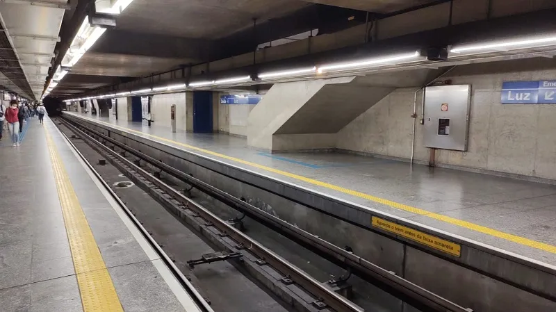

Palmeiras empata duas vezes com 10 em campo e mantém liderança no saldo
Fortaleza e Palmeiras empataram por 2 a 2, hoje, na Arena Castelão, pela 35ª rodada do Campeonato Brasileiro. O time de Abel Ferreira conseguiu um resultado heroico, buscando o empate duas vezes mesmo com um homem a menos desde os 13 minutos do 2º tempo.
Com um ponto somado, o Alviverde chegou a 63 pontos na liderança da competição, e segue dependendo de suas forças para ser campeão. O Flamengo, vice-líder da competição, também tem 63 pontos após a vitória contra o América-MG, mas o Alviverde leva vantagem no saldo de gols — 26 contra 17. Então se o Palmeiras vencer os três jogos e não permitir o rival tirar o saldo, será campeão.
Leia Mais

Apple Watch Ultra 2 é anunciado com chip S9 e display mais brilhante
Lançado no ano passado, o Apple Watch Ultra, modelo do smartwatch da Maçã voltado a esportistas e aventureiros, ganhou alguns updates hoje no evento especial “Wonderlust” (“Emoção em ação”).
Como esperado, o modelo de segunda geração trouxe apenas mudanças pontuais, as quais incluem um novo processador e uma tela mais brilhante.
Leia Mais

Com greve, Estação da Luz fica lotada na volta para casa; siga
No Metrô, Linha 15-Prata está parada; 1-Azul, 2-Verde e 3-Vermelha têm operação parcial; 4 e 5 operam integralmente;
Na CPTM, 7-Rubi, 10-Turquesa e 11-Coral têm operação parcial; 12-Safira, 13-Jade, 8-Diamante e 9-Esmeralda operam integralmente;
Greve é contra as privatizações do governo e funcionários da Sabesp também aderiram;
Funcionários da Fundação Casa apoiam a paralisação, mas não vão parar as atividades;
Aulas das escolas municipais, estaduais e creches estão mantidas.
Leia Mais